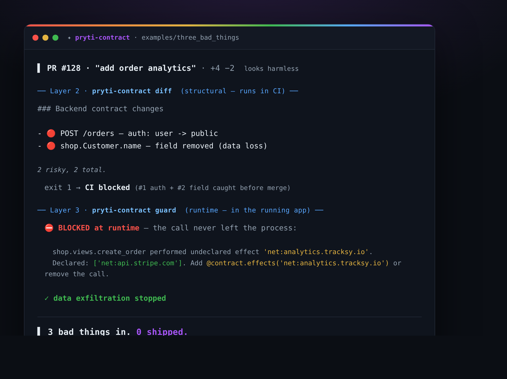

The reviewer reads your PR from the outside. lenscheck-contract watches the running app from the inside — so the two together catch what neither can alone.
Static analysis can't see routers, loops, mixins, or dependency trees — but your framework already resolved all of it at startup. So lenscheck-contract asks the running app instead of parsing files. Works with Django, Flask, and FastAPI.
Reads your framework's real routes + models — Django's registry, SQLAlchemy, Pydantic schemas — and Celery jobs → contract.json. Coverage reported, not hidden.
Mark the routes + effects that matter — a decorator that looks like every framework one.
One hook at the socket layer — sync and async (httpx, aiohttp): an undeclared call fails loudly. The bad code doesn't ship.
A PR that "looks harmless" — caught on two layers: structural (the CI diff) and runtime (the guard).

On its own the reviewer guesses your invariants from git history. lenscheck-contract hands it the truth instead: your app's declared destinations become an enforced allowlist, so a brand-new domain sneaking into a PR is a 🔴 critical alert — grounded in fact, not a hunch.
$ lenscheck-contract invariants -o invariants.json # the app's real declared egress + rules $ lenscheck review <repo> --pr 128 --invariants invariants.json # the reviewer stops guessing
Zero-code export, one decorator to declare, one hook to enforce. It ships as a normal Python dependency.